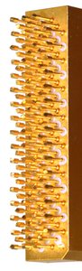
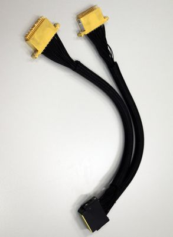

PS1600 pogo cable assembly E8030PVHD: 2 VHD pogo blocks
The E8030PVHD pogo cable assembly connects the 128 channels of a PS1600 card via 2 very-high-density (VHD) pogo blocks to the DUT board.
This pogo cable also has one 128-pin connector at one end to connect to the PS1600 card, but two 64-pin pogo blocks at the other end. This increases the maximum number of PS1600 pins to 5632 using the standard card filling scheme and to 8192 pins using the non-standard scheme.
The pogo cable assembly uses two 7-row pogo blocks. To use this pogo cable assembly, you must have designed your DUT board appropriately. This pogo cable assembly is to be used for special configurations only.
Basic data and pogo block
|
 |
|
The very-high-density Pin Scale 1600 pogo assembly uses the same pin layout as the high-density assembly (see above), but in addition it also uses three extra rows e, f, and g making a total of 64 pins per block.
The VHD pogo block combines 4 logical boards with the related channels available on rows b and c, rows a and d or on a combination of the extra rows e and f, or f and g. See also Pogo pin assignment VHD pogo block in PS1600 pogo pin assignment.
Pogo cable assembly

Functional changes
- Introduced in SmarTest 7.5.4 / 8.3.3